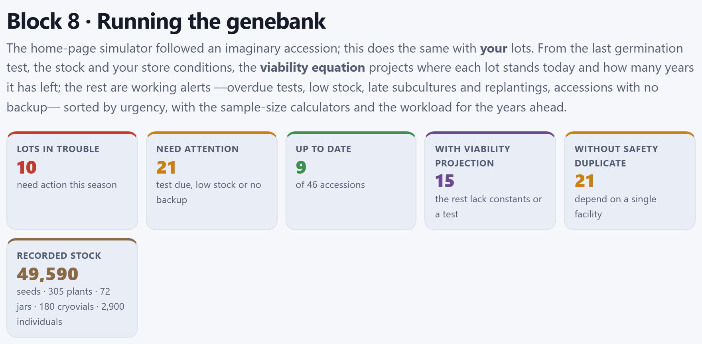
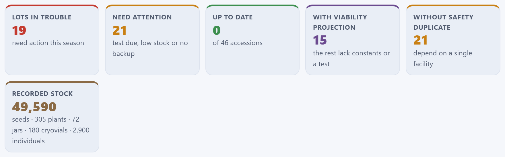
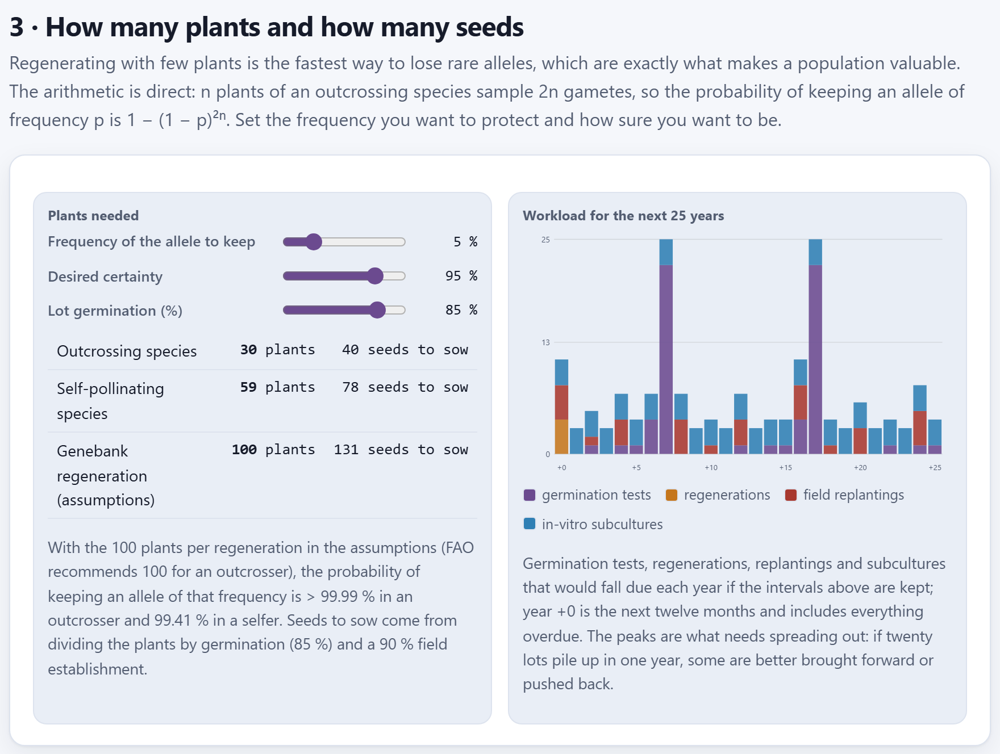
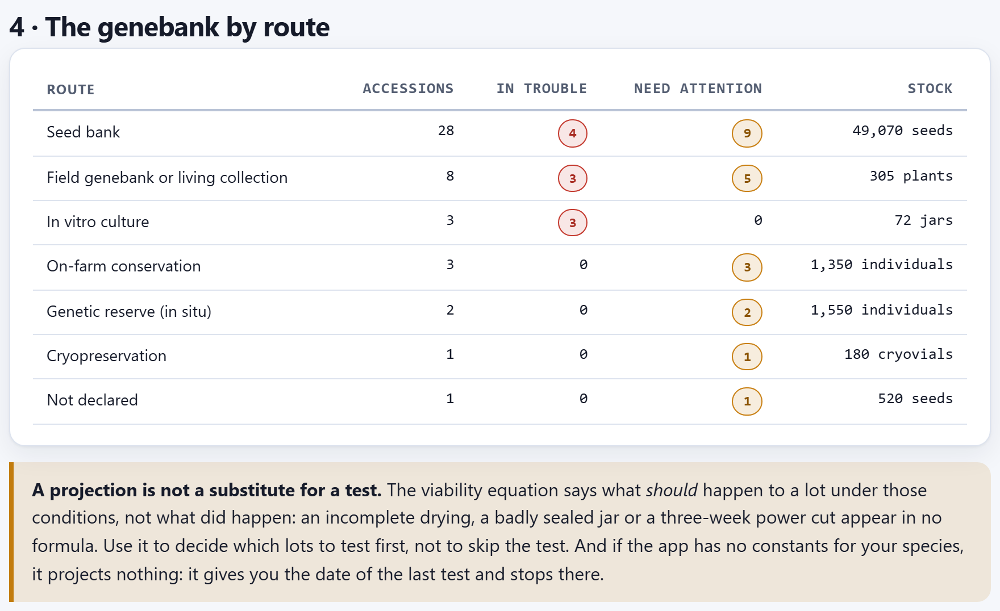

Running the genebank
The Block 1 simulator followed an imaginary accession; Block 8 does the same with your lots. From the last germination test, the stock, the regeneration dates and the conditions of your store, it projects with the Ellis and Roberts equation where each seed lot stands today and how many years it has left before the threshold; it checks each conservation route —seeds, field, in vitro, cryopreservation, reserve and on-farm plot— and raises alerts sorted by urgency; it records the tests, regenerations, replantings, subcultures, checks and visits you carry out; it computes how many plants and how many seeds are needed to regenerate without losing rare alleles, and it draws the workload for the next 25 years.
- 8.1The genebank dashboard
- 8.2The assumptions: the store and the intervals
- 8.3Today’s viability, lot by lot
- 8.4The alerts, route by route
- 8.5The work list
- 8.6Recording what is done, and the plan as CSV
- 8.7How many plants and how many seeds
- 8.8The workload for the next 25 years
- 8.9The genebank by route
8.1The genebank dashboard
Block 8 works with four passport fields that Chapter 2 introduced (Section 2.1): GP_STOCK (stock), GP_GERMPCT (last germination), GP_GERMDATE (date of that test) and GP_REGENDATE (last regeneration, replanting, subculture, check or visit), plus the conservation route (GP_CONS, or the one inferred from STORAGE) and the safety duplicate (DUPLSITE). An empty cell is missing data, not a zero. Everything is recomputed on entering the block, with no wait: the calculations are instantaneous. If there are no accessions, the block says Load your accessions in Block 2 first.

Everything the block computes is measured from today, your computer’s date: the years since the last test, the projected viability, the overdue checks and visits. The figures in this chapter were taken on October 31, 2026 with the example collection; if you open it on another day, the dates change and, with them, some decimals and perhaps an alert. Incomplete dates are completed at the midpoint: a year without a month counts from June 15, and a month without a day, from the 15th.
The six tiles summarize the state of the genebank. Each accession receives the level of its most serious alert (Section 8.4): in trouble, needs attention, a datum is missing or up to date.
| Tile | Example | What it counts |
|---|---|---|
| Lots in trouble | 10 | Accessions with at least one critical (red) alert. In red if there is any. |
| Need attention | 21 | Accessions whose most serious alert is a warning (ocher). |
| Up to date | 9 | Accessions with no alert at all, “of 46 accessions”. The remaining 6 only have a missing-data notice, which has no tile of its own: 10 + 21 + 9 + 6 = 46. |
| With viability projection | 15 | Seed lots with viability constants for their species and a dated test: the 15 maizes and teosintes in the seed bank. |
| Without safety duplicate | 21 | Ex situ accessions with no copy in another institution (Section 8.4). |
| Recorded stock | 49,590 | Seeds, in large type, and below them the other units, each on its own: seeds · 305 plants · 72 jars · 180 cryovials · 2,900 individuals. The seeds add up those in the seed bank (49,070) and those of the lot with no declared route (520); the individuals, those in the reserves and in the on-farm plots. |
Stock is not added across units: a seed, a field plant and a jar are not worth the same. By route they appear in section 4 (Section 8.9). Below the four sections of the block, a note reminds you that A projection is not a substitute for a test. (Figure 8.6).
8.2The assumptions: the store and the intervals
The 1 · The assumptions behind every figure section gathers fifteen sliders. They are the conditions of your store and the working intervals and minimums of your genebank, route by route; everything the block says further down follows from them. The number on the right changes as you drag, and the calculation is redone when you release. The values are saved in the browser and kept when you close the app.
![Section 1: fifteen sliders in three columns, Store temperature −18, Seed moisture 6, Regeneration threshold 85, Years between germination tests 10, Minimum seeds in the jar 400, Plants per regeneration 100, Seeds per germination test 200, Years between replantings (field) 8, Minimum plants (field) 25, Months between subcultures 12, Minimum jars (in vitro) 10, Years between cryovial checks 5, Minimum cryovials 20, Years between visits (in situ) 2 and Years between visits (on farm) 1; below, Viability constants loaded: 1 taxon — Zea mays, the button Add constants for a species and the note about the constants](../img/en/b8-supuestos.png)
| Slider | Range · step | What it governs |
|---|---|---|
| Store temperature (°C) | −20 to 25 · 1 · −18 | The t of the viability equation (Section 8.3). |
| Seed moisture (%) | 3 to 14 · 0.5 · 6 | The m of the equation, in % of fresh weight. |
| Regeneration threshold (%) | 50 to 95 · 5 · 85 | Below this germination, measured or projected, the lot is in trouble and must be regenerated. |
| Years between germination tests | 1 to 20 · 1 · 10 | When a seed lot’s test falls due and how often it is repeated in the workload. |
| Minimum seeds in the jar | 50 to 2,000 · 50 · 400 | Below it, stock in trouble; below 1.5 times the minimum (600), a warning that it is getting close. |
| Plants per regeneration | 20 to 300 · 10 · 100 | The plants you regenerate with: they give the seeds to sow in the alerts, the third line of the calculator (Section 8.7), the plants in the workload and the sowing list of Block 9. |
| Seeds per germination test | 50 to 500 · 25 · 200 | What it proposes to deduct when you record a test (Section 8.6). |
| Years between replantings (field) | 1 to 30 · 1 · 8 | The cycle of the field genebank, counted from GP_REGENDATE. |
| Minimum plants (field) | 5 to 100 · 5 · 25 | Below it, the field accession is in trouble. |
| Months between subcultures | 2 to 24 · 1 · 12 | The interval of slow-growth in vitro culture. |
| Minimum jars (in vitro) | 2 to 50 · 1 · 10 | Below it, a warning of few jars. |
| Years between cryovial checks | 1 to 20 · 1 · 5 | How often a cryovial is thawed to check that the material regrows. |
| Minimum cryovials | 5 to 100 · 5 · 20 | Below it, a warning of few cryovials. |
| Years between visits (in situ) | 1 to 10 · 1 · 2 | How often a genetic reserve is visited. |
| Years between visits (on farm) | 1 to 10 · 1 · 1 | How often an on-farm conservation plot is visited. |
The viability constants
Below the sliders, the line Viability constants loaded says how many taxa have constants and names the first four. By default there is only one, 1 taxon — Zea mays, with the constants published by Ellis and Roberts: KE = 6.474, CW = 2.115, CH = 0.0329 and CQ = 0.000478.
The Add constants for a species button opens four browser prompts in a row: the taxon (it suggests those in your collection), KE, CW and the source. The two constants propose the maize values; CH and CQ are not asked and take the values above, which describe the effect of temperature in many orthodox species (Section 1.5). Write the taxon exactly as the genus and species of the passport, separated by a space: Phaseolus vulgaris, not P. vulgaris or bean. If you add a taxon that already has constants, the new ones replace them; that is also how the maize ones are corrected, under the name Zea mays.
Your own constants are saved in the browser, and the line says so: with some for the common bean it shows 2 taxa — Zea mays, Phaseolus vulgaris (1 your own) and a second button, Back to the published ones, which, after asking you, deletes all your own constants and leaves only the published maize ones.
For the other twelve species with seed lots in the example collection the app projects nothing: it says the constants are missing and works only with the value and date of the last test. That is better than making up a number. Take KE and CW for your species from Kew’s Seed Information Database or from the literature, and record the source in the fourth prompt. Accepting the proposed values for another species amounts to assuming that it ages like a maize.
8.3Today’s viability, lot by lot
For every lot in the seed bank —or with no declared route, which the block treats the same way— with constants for its species, a germination value and a test date, the app projects today’s germination and the years it has left before crossing the threshold. It is the same equation as the Block 1 simulator (Section 1.5), applied from the lot’s last real test.
Ki is the germination of the last test expressed in probits: Ki = Φ−1(g0/100); p, the days elapsed since that test; σ, the days it takes viability to fall by one probit, and Φ, the cumulative normal. With the threshold u, the years the lot has left from today are
If the result is negative, the lot has already crossed the threshold. Germination is bounded between 0.01 and 99.99% before converting it to probits, because Φ−1 of 0 or of 100 is infinite.
The last test gave 88% on March 10, 2024; on October 31, 2026, 2.64 years (965.6 days) have passed. The store is at −18 °C with 6% moisture.
| log10 σ = 6.474 − 2.115 × 0.77815 − 0.0329 × (−18) − 0.000478 × 324 = 6.474 − 1.6458 + 0.5922 − 0.1549 = 5.2655 | |
| σ = 105.2655 = 184,305 days = 504.6 years per probit | |
| Ki = Φ−1(0.88) = 1.17499 | v = 1.17499 − 965.6 / 184,305 = 1.16975 |
| today’s germination = 100 · Φ(1.16975) = 87.89% → the table writes 88 % → 88 % | |
| years to threshold = 504.6 × (1.17499 − 1.03643) − 2.64 = 69.91 − 2.64 = 67.27 years | |
At −18 °C the lot loses a tenth of a point in two and a half years: the projection has nothing to warn about, and the lot’s only alert is that it has no safety duplicate.
The Teocintle de Balsas (MEX-ZP-0011) is another case: its last test gave 81% on September 14, 2023, already below the 85% threshold; the projection puts it today at 80.83%, which is also written 81%, and its “years to threshold” are −83.1, because under those conditions it would take 83 years to fall from 85 to 81%.
The projected viability appears in the Germination column of the work list, after an arrow: 88 % → 88 % is the last test and today’s value. Below it goes the time since the test, in years with one decimal: 2.6 y ago, or no test recorded if there is no date.
What temperature and moisture weigh
At −18 °C and 6% moisture the difference between the test and the projection is invisible. The conditions of the store are what change the picture: move the first two sliders and watch how the collection responds.
| Store | σ (years per probit) | MEX-ZM-0001 today | Years to threshold | In trouble | Up to date |
|---|---|---|---|---|---|
| −18 °C, 6% (default) | 504.6 | 87.89% | 67.27 | 10 | 9 |
| 5 °C, 6% | 122.8 | 87.56% | 14.37 | 10 | 9 |
| 5 °C, 8% | 66.8 | 87.19% | 6.61 | 10 | 9 |
| 20 °C, 12% (no store) | 6.0 | 76.91% | −1.81 | 19 | 0 |
In a cold room at 5 °C the blue maize goes from having 67 years ahead of it to having 14, and with seed at 8% moisture, fewer than 7; the dashboard does not change yet, but the workload does: at 5 °C and 6% regenerations appear in years 14 and 20 (Section 8.8). In a community seed bank with no store, at 20 °C and 12%, nine more maizes cross the threshold and the lots in trouble go from 10 to 19; the other four —those at 93 to 95%— are left with fewer than 3 years and need attention.

8.4The alerts, route by route
Each conservation route has its own clock, and the block applies to each accession the checks of its route. Each alert has a level: critical (in red, 3 points), warning (in ocher, 2 points) or missing datum (in blue, 1 point). Table 8.4 gathers them all, with the default minimums and intervals.
With the example collection, the 10 accessions in trouble are four seed lots below the threshold —the teosinte (81%), the irrigated ancho maize (72%), the vaquita bean (84%) and the tepary bean (79%)—, three field accessions with few plants —the cacao, the avocado and a chayote— and the three in vitro cultures, with 32 to 34 months without subculture against an interval of 12. The 6 that only have a missing datum are seed lots without constants and with everything else in order: the runner bean, the squash, two chilies, the husk tomato and the wheat.
| Route | When it appears and what it says | Level | Ex. |
|---|---|---|---|
| Seed bank (or no declared route) | The last test already gave less than the threshold: The last test gave N %, below the 85 % threshold. Regenerating with 100 plants means sowing about S seeds. | critical | 4 |
| The test is above the threshold, but today’s projection is not: The projection puts it at N % germination…, with the same sentence about the seeds. | critical | 0 | |
| It has fewer than 3 years left before crossing the threshold: About N years left… | warning | 0 | |
| It has a germination value, but there are no constants for its species: No viability constants for… | datum | 14 | |
| It has no test date: It has never had a germination test. | critical | 0 | |
| More years than the interval have passed since the last test: N years since the last test… | warning | 0 | |
| Stock below the minimum (N seeds left…, critical) or below 1.5 times the minimum (Stock (N) is getting close to the minimum., warning). | critical · warning | 0 · 2 | |
| The stock cell is empty: No stock recorded. | datum | 0 | |
| Field genebank | No date of the last replanting: No date for the last replanting. | warning | 2 |
More years than the cycle since GP_REGENDATE: N years since the last replanting… | critical | 2 | |
| Fewer plants than the minimum: Only N plants left (the minimum is 25): drift at the next replanting will be severe. | critical | 3 | |
| In vitro culture | No date of the last subculture: No date for the last subculture. | warning | 0 |
More months than the interval since GP_REGENDATE: N months since the last subculture… | critical | 3 | |
| Fewer jars than the minimum: N jars left (the minimum is 10). | warning | 0 | |
| Cryopreservation | More years than the interval since the last check (GP_REGENDATE) or, if there is none, since it entered the genebank (ACQDATE): N years since it entered the genebank, with no check recorded…; with neither date, No date for the last check of the cryovials. | warning | 1 |
| Fewer cryovials than the minimum: N cryovials left (the minimum is 20). | warning | 0 | |
| Reserve and on-farm plot | More years than the interval since the last visit, which is GP_REGENDATE or, if missing, the collecting date: N years since the last recorded visit to the site… | warning | 5 |
| Every ex situ route | No site in DUPLSITE is an institution other than INSTCODE: No safety duplicate in another institution. | warning | 21 |
Below the threshold there is a single alert, the most serious one: if the measured test is already below, the app states it and mentions the projection only when it shows after rounding (…below the 85 % threshold; the projection puts it at N % today). The teosinte gets no such mention, because 80.83% is also 81%. The closing sentence gives the seeds to sow to regenerate with the plants in the assumptions and today’s germination (the projected one, if there is one): S = ⌈ plants / (g · 0.9) ⌉, as in the calculator (Section 8.7). If the stock is not enough, it adds: …and only N are left.
The safety duplicate follows the same rule as the Block 2 validation (Section 2.6): DUPLSITE may hold several codes separated by semicolons, and it is enough for one to differ from the code of the institution that holds the accession. In situ routes do not require it; all the others do, including cryopreservation and the DNA bank. The only cryopreserved accession in the example, the bitter potato (PER-ST-0022), has no check recorded and entered the genebank in 2018; its alert says 8.2 years since it entered the genebank, with no check recorded (the plan is every 5).
8.5The work list
The 2 · What needs doing section is the list for the season: one row per accession, sorted by urgency, as the paragraph under the title explains. First comes the level: the accessions in trouble, then those needing attention, those with a missing datum and, last, those up to date. Within each level, the score, the sum of the points of its alerts (3, 2 or 1), from highest to lowest; on equal score, the accession number, in alphabetical order. It shows up to 200 rows.
| MEX-PH-0041, tepary bean: 79% < 85 → 3 + no constants 1 + 430 < 600 → 2 + no duplicate 2 = 8 | |
| MEX-TC-0027, cacao: replanting overdue (8.7 > 8 years) 3 + 20 plants < 25 → 3 + no duplicate 2 = 8 | |
| MEX-SE-0046, chayote: no replanting date 2 + 15 plants → 3 + no duplicate 2 = 7 | |
| MEX-PA-0026, avocado: 3 + 3 = 6; MEX-SE-0013, vaquita bean: 84% → 3 + no constants 1 + no duplicate 2 = 6 | |
| MEX-ZM-0043, irrigated ancho maize: 72% → 3 + no duplicate 2 = 5 | |
| COL-MA-0035, MEX-VA-0025, MEX-ZP-0011 and PER-ST-0021: a single critical alert, 3 each | |
| needs attention: MEX-CH-0042, costeño chili: 1 + 2 + 2 = 5; MEX-CA-0028 and PER-ST-0022: 2 + 2 = 4; … |
The 10 accessions in trouble come first, even though the teosinte only adds up to 3 points and the costeño chili, which only needs attention, adds up to 5. The first two tie at 8 points, and the tepary bean comes before the cacao by its accession number (MEX-PH before MEX-TC); the same goes for the avocado and the vaquita bean, with 6, and for the four 3-point lots. After the 21 needing attention come the 6 with a missing datum and, last, the 9 up to date.
| Column | What it shows |
|---|---|
| Accession | The accession number and, below it, the first 24 characters of the name. |
| Route | The conservation route, in a label in the color of the accession’s level: red in trouble, ocher if it needs attention, blue if a datum is missing, green if it is up to date. |
| Stock | GP_STOCK and, below it, its unit: seeds, plants, jars, cryovials or individuals; “—” if the cell is empty. |
| Germination | Seed only: the last test, today’s projection after the arrow if there is one, and the time since the test. In the other routes, “—”. |
| What is going on and what to record | The alerts, each with a bar in the color of its level (or the up to date label), and below them the buttons to record the work done (Section 8.6). |
![Section 2: the paragraph The list goes by urgency, lots in trouble first, then those needing attention, those missing a datum and, last, those up to date, within each group those adding up the most alerts first and, on equal score, by accession number; the selectors Show on everything and Route on all, the button Work plan as CSV and the first three rows of the table: MEX-PH-0041, Frijol tepari, Seed bank, 430 seeds, 79 % 3.8 y ago, the alert The last test gave 79 %, below the 85 % threshold. Regenerating with 100 plants means sowing about 141 seeds, and three more, with the buttons Record test and Regeneration; MEX-TC-0027, Cacao criollo de Ocosing, Field genebank or living collection, 20 plants, germination —, three alerts and the button Replanting; MEX-SE-0046, Chayote verde liso, 15 plants, three alerts and the button Replanting](../img/en/b8-tareas.png)
Two selectors filter the list. Show leaves everything, only the accessions in trouble (10), those that need attention (21), those with a missing datum, missing data (6), or those up to date (9). Route leaves a single route; each option says how many accessions it holds, for example Seed bank (28) or Not declared (1), which leaves only the costeño chili (MEX-CH-0042).
8.6Recording what is done, and the plan as CSV
The buttons on each row write into the passport what you did today. Each route has its own, and they work with the browser’s prompt windows; if you cancel any of the prompts, nothing is saved. To record a regeneration not yet tested, leave the germination empty and accept. When you finish, the passport is saved in the browser, the Block 2 table is updated and Block 8 is recomputed.
| Button · route | Prompt | Changes in the passport |
|---|---|---|
| Record test · seed and no route | The result (%, from 0 to 100; accepts a decimal comma) and how many seeds were used, proposing the number in the assumptions (200; 0 for no deduction). | GP_GERMPCT (with one decimal), GP_GERMDATE, and subtracts the seeds from GP_STOCK without going below 0; if no stock is recorded, it deducts nothing. |
| Regeneration · seed and no route | The stock after regenerating and the germination of the new lot, with 96% proposed; both may be left blank. | GP_REGENDATE; GP_STOCK if you gave a stock; GP_GERMPCT and GP_GERMDATE if you gave a germination. |
| Replanting · field; Subculture · in vitro; Check · cryopreservation | The stock after the work, in its unit (plants, jars or cryovials); blank if unchanged. | GP_REGENDATE and, if you gave a stock, GP_STOCK. |
| Visit · reserve and on-farm plot | Only confirms: Record a visit to the site of … today? | GP_REGENDATE. |
On the Maíz azul de Apoala (MEX-ZM-0001), Record test with 80% and 200 seeds leaves GP_GERMPCT = 80, GP_GERMDATE = 20261031 and GP_STOCK = 1,600 (1,800 − 200). The lot goes from needing attention to being in trouble, with 5 points and the alert The last test gave 80 %, below the 85 % threshold. Regenerating with 100 plants means sowing about 139 seeds. (100 / (0.80 × 0.9) = 138.9). Then, Regeneration with 3,000 seeds and 97% leaves GP_STOCK = 3,000, GP_GERMPCT = 97 and both dates at 20261031; the lot is left with only the alert that it has no safety duplicate. In the same way, Check on the cryopreserved potato with 170 cryovials removes its overdue-check alert.
The changes enter the passport like any other edit: they show in the Block 2 record and travel in its exports. There is no history of tests; each record replaces the previous one. If you need to keep the series, export the passport before each season.
The work plan as CSV
The Work plan as CSV button saves work-plan.csv, in UTF-8, with one row per accession with any alert —37 with the example collection— in passport order and without applying the filters. If none has alerts, the app says Nothing pending: the whole collection is up to date.
| ACCENUMB | route | urgency | stock | unit | last_germination | projected_germination |
|---|---|---|---|---|---|---|
| MEX-ZM-0001 | Seed bank | needs attention | 1800 | seeds | 88 | 87.9 |
| MEX-ZP-0011 | Seed bank | in trouble | 900 | seeds | 81 | 80.8 |
The other five columns are ACCENAME, TAXON (genus and species), years_since_test, years_to_threshold (67.3 and −83.1 in these two rows) and actions, the accession’s alerts separated by a vertical bar. The route, the urgency, the unit and the actions come out in the language of the interface; the years, with one decimal. Cells with no data are left empty: in the routes that are not seed, the five germination and year cells. Sort it by urgency in your spreadsheet and share it out among those who do each task.
8.7How many plants and how many seeds
The 3 · How many plants and how many seeds section has two panels. The one on the left, Plants needed, answers the question of every regeneration: with how many plants rare alleles are not lost. It has three sliders: Frequency of the allele to keep (1 to 20%, default 5%), Desired certainty (80 to 99%, default 95%) and Lot germination (%) (20 to 100% in steps of 5, default 85%). The result changes as you drag.

99.99 % in an outcrosser and 99.41 % in a selfer; on the right, the bar chart Workload for the next 25 years with scale 0, 13 and 25, peaks of 25 tasks in years 7 and 17, subcultures in blue every year, regenerations and replantings in year 0, and the legend of four series">A regeneration with n plants is a sample of gametes. In an outcrossing species, each plant contributes two independent gametes, and the probability that an allele of frequency p is left out of the 2n gametes is (1 − p)2n. In a self-pollinating species, nearly homozygous, each plant contributes in practice a single effective gamete, and the exponent is n. To keep the allele with probability P:
The seeds to sow come from dividing the plants by the germination g and a fixed field establishment of 90%: seeds = ⌈ n / (g · 0.9) ⌉.
The first two lines say how many plants are needed in an outcrossing and in a self-pollinating species, and how many seeds to sow to obtain them. The third, Genebank regeneration (assumptions), takes the plants per regeneration from section 1 and gives their seeds; the note below gives, with them, the probability of keeping the allele in the two kinds of species and, if they are not enough, how many would be needed. Probabilities within a hundredth of 100% are written > 99.99 %.
| p = 0.05, P = 0.95: ln 0.05 = −2.99573; ln 0.95 = −0.05129 | |
| outcrossing: 2.99573 / (2 × 0.05129) = 29.20 → 30 plants | selfing: 2.99573 / 0.05129 = 58.40 → 59 plants |
| seeds: 30 / (0.85 × 0.9) = 39.2 → 40 | seeds: 59 / 0.765 = 77.1 → 78 |
| 100 plants: seeds 100 / 0.765 = 130.7 → 131; 1 − 0.95200 = 99.9965%, written > 99.99%; 1 − 0.95100 = 99.41% | |
| p = 0.01: outcrossing 2.99573 / (2 × 0.01005) = 149.04 → 150 plants and 197 seeds; selfing 299 and 391 | |
| 100 plants and p = 0.01: 1 − 0.99200 = 86.60% (outcrossing); 1 − 0.99100 = 63.40% (selfing) | |
With p = 1% the note adds 100 plants do not reach the requested certainty in an outcrosser: 150 would be needed. A 5% allele is kept with 30 plants of an outcrosser; a 1% one requires 150. That is why it pays to set the lowest frequency you care about, not the most convenient one, and to carry that number over to the Plants per regeneration slider.
FAO recommends 100 plants to regenerate an outcrosser, and that is the slider’s default value. The calculation assumes a random sample and unrestricted crossing: if only part of the plants flower and cross, the effective number is smaller than the number you sow, and you have to sow more.
8.8The workload for the next 25 years
The right-hand panel of section 3 is a stacked bar chart: for each year, from +0 to +25, how many germination tests (purple), regenerations (orange), field replantings (red) and in-vitro subcultures (blue) would fall due if the intervals of section 1 are kept. Year +k is the span from k to k + 1 years from today: +0 is the next twelve months, and it includes everything overdue. This is what decides a genebank’s budget: how many sowings, how much greenhouse space and how many hands are needed each year.
| Task | When it falls |
|---|---|
| Germination test | In seed lots (or with no declared route): interval − years since the last test, and every interval from then on. If it is overdue or the lot was never tested, the first one falls in year +0. |
| Regeneration | In year +0 if the last test is already below the threshold, whether or not the species has constants; in lots with a projection, the year they cross the threshold. Each one counts the plants per regeneration from the assumptions. |
| Field replanting | Cycle − years since the last replanting, and every cycle from then on; in year +0 if it is overdue or there is no date. |
| In vitro subculture | Interval − time since the last subculture, and every interval from then on, event by event: with 24 months, one year it falls due and the next it does not. |
| year +0: 4 regenerations (teosinte, vaquita bean, tepary bean, irrigated ancho maize; ≈ 400 plants) + 4 replantings (avocado and cacao, overdue; coffee and a chayote, no date) + 3 subcultures = 11 | |
| years +7 and +17: 22 tests + 3 subcultures = 25, the top of the scale | |
| in 26 years: 61 tests, 4 regenerations, 28 replantings and 78 subcultures (3 jars × 26) |
The two peaks are the 22 lots tested between March and April 2024: their tests fall due together in 7.4 years and repeat ten years later. This is the case the panel’s note points out: it pays to bring some of those tests forward to spread them over the neighboring years. Another four lots, tested in 2023, fall in year +6.
The chart has an alternative text with the summary —totals, year +0 and the busiest year— for screen readers. When you hover over a segment, a label gives the year, how many tasks there are and, for regenerations, how many plants they add up to: year +0: 4 regenerations (≈ 400 plants). The vertical scale has three marks: 0, the midpoint and the maximum (with the example collection, 0, 13 and 25). The chart also goes into the Block 10 report (Chapter 10).
The workload changes with the assumptions. With tests every 5 years, the peaks of 22 tests repeat in years 2, 7, 12, 17 and 22. With 24 months between subcultures, each jar is subcultured 13 times in 26 years, not 26. With the store at 5 °C and 8% moisture, other regenerations are added to the 4 in year +0 in years 6, 10, 13, 17 and 21; at 20 °C and 12%, 16 regenerations fall in year +0.
8.9The genebank by route
The 4 · The genebank by route section summarizes the collection by conservation route, from the one with the most accessions to the one with the fewest: how many accessions, how many in trouble and how many need attention (in colored labels when they are not 0) and the sum of their stock with its unit.

How to read it. The seed bank concentrates the accessions, but its problems are few and almost all about backup: 4 of 28 lots in trouble. The field and in vitro routes are the opposite: 3 of 8 and 3 of 3 in trouble, with 305 plants and 72 jars in total. These are the routes lost through neglect —a replanting that was not done, a subculture that slipped— and the ones that need the most hands per accession. The Not declared row is the costeño chili, which has no GP_CONS and whose STORAGE holds a code that does not exist in MCPD (15, one of the seeded errors flagged by the Block 2 validation): the block checks it as seed, but you should declare its route in Block 2.
The footnote, A projection is not a substitute for a test., sums up the limit of the block: the equation says what should happen to a lot under those conditions, not what did happen to it. Incomplete drying, a badly sealed jar or a power cut appear in no formula. Use the projection to decide which lots to test first, not to skip the test.
When something goes wrong
| What you see | Why it happens and what to do |
|---|---|
| Load your accessions in Block 2 first. | There is no passport. Load your collection or the example one (Chapter 2). |
| No viability constants for… in almost every lot | Only maize comes with constants. Add those of your species with Add constants for a species (Section 8.2). |
| I added constants and the lot still has no projection | The taxon does not match letter for letter the genus and species of the passport, or the lot has no GP_GERMPCT or GP_GERMDATE. |
| It has never had a germination test. or No stock recorded. | The GP_GERMDATE or GP_STOCK cells are empty. Fill them in the Block 2 record, or do the test and record it. |
| The Germination column says “—” | The route is not seed, or the lot has no recorded test. |
| The alert says there are not enough seeds to regenerate | The stock is smaller than the seeds to sow. Regenerate with what there is and request material from the safety duplicate. |
| Year +0 of the workload is very heavy | Everything overdue falls there. Spread what you can over the season and record what you do. |
| I recorded something by mistake | There is no undo. Correct GP_GERMPCT, GP_GERMDATE, GP_REGENDATE or GP_STOCK in the Block 2 record. |
| If you are reading the block for the first time | then first set the real temperature and moisture of your store, and the intervals and minimums of your genebank, not those of the standard. |
| If your species are not maize | then add their constants with their source; without them, work with the tests and their dates. |
| If the last test or the projection is below the threshold | then regenerate the lot this season, with the plants the calculator asks for the rarest allele you care about, and sow the seeds the alert gives. |
| If it has fewer than 3 years left before the threshold | then bring its germination test forward: the projection decides what to test first, the test decides whether to regenerate. |
| If a field accession has few plants or an overdue replanting | then replant it first and make an in vitro or cryopreserved backup. |
| If an in vitro culture is past its subculture interval | then subculture it before any seed lot: the jar does not wait. |
| If the cryovials have no check recorded | then thaw one, check that it regrows and record the check. |
| If an ex situ accession has no safety duplicate | then send a copy to another institution and note it in DUPLSITE. |
| If the workload has a peak | then bring some of those tests forward to spread them over the neighboring years. |
Block 8 writes to the passport only when you record a test, a regeneration, a replanting, a subculture, a check or a visit; the rest is arithmetic. Export the passport every season to keep the history of your lots, which the app does not store.